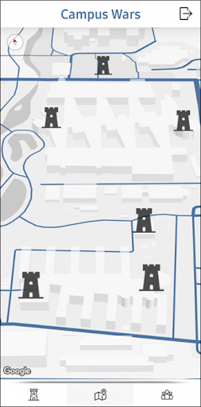
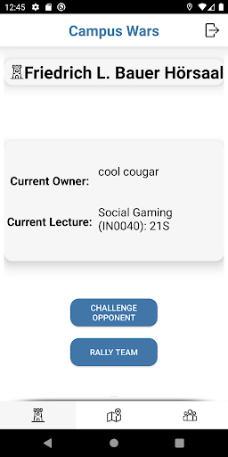
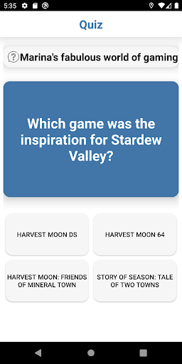
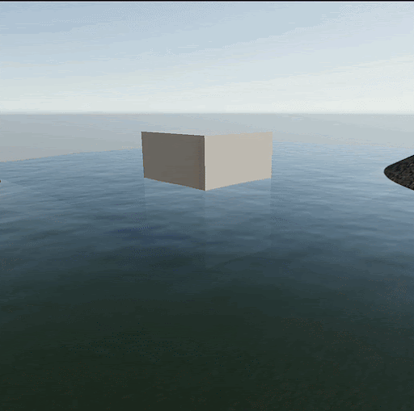
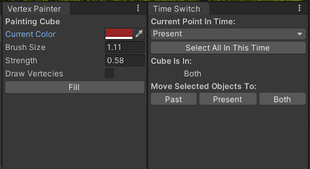
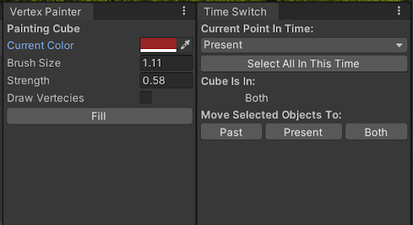

Also feel free to check out my
Itch.ioKawami
2023
Made using Unity
6 Team Members

Weekend Game Jam

Play on Itch
cute
top-down
stealth
shape-shifting
enemy AI
Read More
The game turned out shorter than we hoped and would have benefited from a bit more playtesting. Nevertheless I'm fairly happy with the outcome, as we were able to finish the game despite slight overscoping and organizational difficulties. I feel with more levels, this game could fulfill its potential, as the main mechanics are fully functional.
My main contributions were:
- FSM-based Enemy AI
- Partial work on most other tasks in both code and art

View on Youtube
Enemy AI
I made use of a finite state machine - naively implemented with an enum and the switch-method.
An enemy-AI, can therefore be in different states:
- Guard - stand at a point
- Partrol - walk thorugh waypoints
- Wander - walk to random points near waypoint
- Investigate - walk to point and then to random ones close by
- Combat - walk towards the player and shoot
- Flee - walk away from the player
There is a method changeState(Behaviour nextBehaviour):
Here variables for the next state get set. (Things like navmesh agent destination etc.)
Periodically the exit conditions for each state are getting checked. Some examples include timeSinceStartOfBehaviour and LineOfSightToPlayer. Afterwards the state is changed accordingly.
In Update, depending on the currentState, a different method is calles, which controls the actual behaviour of the enemy. For example in case of the patrol state, the distance to the next waypoint is checked and the navmesh destination is updated, if applicable.
The AI makes uses of an event based sensing system. These events are invoked, when the player/exits enters the vision cone or makes a sound withing audible range. Depending on the current state, the next one is selected and transitioned to - usually investigate or combat.
Das sensing funktioniert über range, winkel, raycast und layer checks. Zusätzlich haben wir noch ein Event, dass andere Skripts über state wechsel informiert. Damit wird dann z.B. eine Voice line gespielt, damit der player versteht was eigentlich passiert The sensing works by checking range, angle, raycasts and layers. Additionally, with every state change, an event is invoked, which then informs any other components. This is used for mostly visual side effects, including emotes and audio barks.
Heart Attack
2022
Made using Unity
4 Team Members

1st Place SemesterGameJam Winter 2022
Weekend Game Jam

Play on Itch
bullethell
top-down
shooter
BOIDs
Read More
HeartAttack is a bullet-hell twin-stick-shooter with wave mechanics.
The concept was much simpler than that of many other contestants and no single aspect of our game blew the others out of the water. We won first place anyway. This taught me valuing a cohesive overall experience.
My main contributions were:
- BOID flocking behavior for white blood cells
- Audio
- Integrating the art into the game
- Advising team members on specialized Unity features


Swarm AI
A large part of my contributions consited of work on the games enemy AI.
Though most of its features remain unused in-game, a slightly improved version can be found on Github.
I made use of steering behaviours - specifically an improvement on BOIDs. BOIDs are a great way to create swarming / flocking masses of enemies.
My version supoorts these features:
- Directional alignment with neighbouring agents
- Positional cohesion of swarm
- Seperation to avoid clumping
- Steering towards a goal
- Avoidance of obstacles
- Spacial hashing for improved performance
Each Update (notably, not necessarily in every frame), for every agent, every feature calculates a new desired direction based on all nearby agents. These directions are then avereraged accourding to user-set weights, defining their behaviour.
To speed up performance, for the necesairy distance checks, a spatial hashmap is used.
Agents are sorted according to their position into grid-cells, with a side-length of the vision distance of the agents.
This makes filtering out obviously out-of range agents trivial for distance-checks, as only adjacent cells need to be sampled, greatly improving performance compared to a brute-force approach.
In the future, I might look into compute shaders and the jobs-system to improve performance even further.
Headline
2022
Made using Unity
6 Team Members
Weekend Game Jam

Play on Itch
interactive fiction
bureaucracy
satire
narrative engine
Read More
Headline is a satire game about manipulative reporting. It puts the player in the role of a malicious newspaper editor.
While the gameplay seems fairly simple, under the hood there are some fairly complex systems controlling the narrative. Combined with difficulty in play testing, this lead to a game unable to live up to its potential. The final product is polished in some aspects, but falls short at its central premise of procedual story telling. After a chaotic start to development I reluctantly became team lead mid way through development. The game would likely have been better, had I done so sooner. I learned the value of an organized development team environment this way.
My main contributions were:
- Narrative Controller
- In Engine Art Integration
- Reluctant team lead
Narrative Engine
A large part of my contributions consited of work on the dynamic narrative systems, which controlled what direction the story takes, by selecting the next available news articles.
Due to organizational difficulties, this system had to be partially cut to fit a smaller scope than intended. Under the hood my original implementation works similarly to the dialog system of Firewatch and valve's AI-driven dynamic dialog system, outlined in these great GDC talks: 1 2
A global DataManager stores information about the player's preovious involvment with specific topics and factions in a form of blackboard. These values can later be queried as preconditions for story threads or modified as direct effects of player actions.
Each news article stores mainly four things.
- The information necessary for display.
- A set of conditions, which have to be met for this article to be considered, along with a lifetime defining the maximum turns the article can stay in the backlog.
- A set of effects, which modify the world state, such as faction relations.
- A UnityEvent used to trigger special effects.
With all this information the StoryManager decides which articles to show next. It is based on a priority cue, containing all relevant articles.
This cue is first filtered for only articles, whose preconditions are met and then sorted based on remaining lifetime. This way currently relevant articles are shown while letting older story-threads resurface as narrative callbacks.
Incase no articles qualify as relevant to the current world state, filler articles are chosen at random from a set of throwaway articles without any preconditions.
After every round the articles effects are applied to the current world state, simulating the news agency's influence on the political climate.
This then affects the available news articles in the next turn, possibly unlocking follow-up stories.
Campus Wars
2021
5 Team Members
Available on Github
~ 1 month
View on Github
social
mobile
game
quiz
UI/UX
Read More
Campus Wars is a mobile social game with the purpose of encouraging class attendance.
The app uses data from the official TUM website to divide students into teams
and then lets them "conquer" territory around the campus by taking part in class relevant quizzes.
There were fairly tight restrictions on what the game could and could not include.
Overall I believe we did a splendid job of bringing theoretical knowledge into a practical setting.
I particularly liked dabbling with mobile development, which I had rarely done before.
My main contributions were:
- UI/UX Design
- GPS / Maps integration
- Game Concept

View on Youtube
Click on Screenshots to view
  
Tempora Facta Casa
2021
Made using Unity
6 Team Members
Chosen for TUM Demo Day
~ 1 month

Play on Itch
arch viz
time travel
puzzle
shaders
tool dev
Read More
Tempora Facta Casa is an exploration with puzzle elements and the goal of intuitively visualizing the effects of wood aging on architecture.
Through the use of time travel and carefully placed hints, the player is led through a forest village and its architecture. The game fulfills its premise fairly well and playing is overall quite fun and relaxing. The graphics are not as polished as I would have liked, both in terms of performance and visual fidelity.
My main contributions were:
- Texturing of the Houses
- Tool Dev for Level Design
- Shader Dev
- Team Organization

View on Youtube
Click on Screenshots to view

 

Tools & Shaders
Tools
Level Time Editor
Keeping track of objects in multiple time eras within the same level quickly became confusing and tedious for our level designers. To make their job easier, I created an editor window, which could selectively hide specific time lines, aswell as move objects between them. This removed visual clutter of WIP levels and sped up the workflow.
Vertex Painter
A major goal of this game was to demonstrate the decay of architecture through time. The main way to archieve this was through textures. The ageing process of wood is however, specific to the surroundings of the houses. So there needed to be a way to paint on objects within the context of the scene and therefore the engine. For that purpose, I created a simple vertex painting tool with features similar to old school paint. The resulting vertex colors could then be fed into custom shaders.
Shaders
Height Blended PBR
In multiple places, it was necesairy to smootly blend between materials within a single mesh.
Unity has some support for this, but only for terrains and only utilising alpha blending and only blending simple textures, not PBR materials. This was not sufficent for our needs.
My improved approach relied on three steps:
- Using a Vertex Colors as splat map inputs
- Height blending, by comparing the materials' height maps, not just the spalt alphas
- Blending PBR materials by blending each texture indiviudally
Swamp Water
At the time of the games development, Unity did not ship with any premade water assets. Also the look we were going for was specific to a swampy biome and could not be archieved with free solutions of the time. So I created my own, with the following features:
- Refraction
- Reflection
- Depth fog
- Scrolling normals
- Noise based waves
- Subtle fake mud on the bottom
Sail Away
2021
Made using Unity
3 Team Members
1 Weekend

Play on Itch
sailing
pirates
cozy
shaders
physics
Read More
Sail Away is a casual game about relaxation and exploration.
The main purpose of this game was to experiment with reactive programming and Unity's new input system. The speed of the ship is dependent on a combination of the ship's sail's and wind direction through a rough approximation of the physics at work, allowing for a smooth sailing experience.
My main contributions were:
- Ship "Physics"
- Water Shader
- Audio